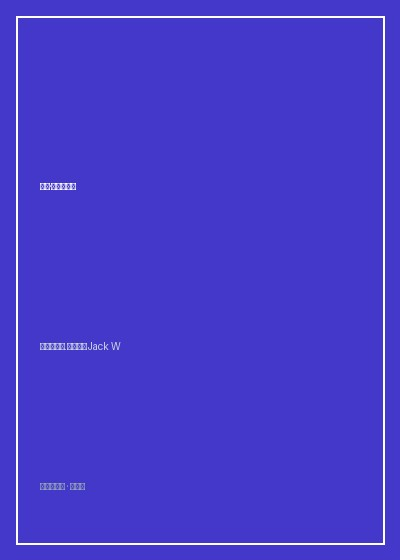

《杰克·韦尔奇自传》

总体观点
杰克·韦尔奇在执掌通用电气（GE）二十年间，将这家沉重官僚的百年老店市值从130亿美元狂飙至逾4000亿美元，开创了现代企业股东价值最大化的黄金时代。韦尔奇的管理哲学是一场毫不妥协的‘官僚主义清洗战’。他深信：大企业唯一的致命宿命就是沉沦于层级臃肿、繁文缛节与自满迟钝；CEO的头号职责就是扮演‘炸弹客’，打破部门壁垒（无界限组织），在庞大帝国中注入小作坊创业团队般的敏捷、坦诚与激情。
‘数一数二（Number One or Number Two）’战略重塑了跨国集团的业务组合边界。韦尔奇给GE旗下上百个事业部下达了铁血最后通牒：任何业务必须在自身全球细分市场中做到行业前两名，否则就面临‘整顿、出售或关闭（Fix, Sell, or Close）’的命运。通过残酷剥离低利润家电与传统制造业，大举进军高附加值的GE金融、医疗影像与航空发动机服务，完成了从传统重工向现代化服务业的脱胎换骨蜕变。
活力曲线（Vitality Curve，即20-70-10末位淘汰制）构成了韦尔奇最具争议也最高效的人力资源引擎。他坚持将团队按业绩与领导力严格划分为前20%顶尖明星、中间70%中坚力量与末尾10%不合格淘汰者。韦尔奇坚信‘虚伪的慈悲是对团队最大的残忍’：诚实面对平庸并果断请其离开，才是对个人与组织最深层的负责。结合六西格玛质量管理与克劳顿维尔领导力学院，他为全球企业界输出了一整套残酷而高效的执行力机器。
核心观点
-
1. 坦诚（Candor）是商业世界的终极货币
企业内部最大的毒瘤就是彼此维持客客气气的虚假繁荣。缺乏坦诚扼杀了创新、掩盖了问题、保护了平庸。领导者必须带头在会议室推行毫不留情的直面现实辩论，让真相第一时间浮出水面。
韦尔奇在GE高管例会上经常当场严厉打断废话连篇的汇报者：‘别念你的PPT了，直接告诉我这笔业务我们到底输在哪儿了！’这种近乎粗暴的坦诚让GE决策效率提速数倍。 -
2. ‘中子弹杰克’与剥离低效业务
在执政前五年，韦尔奇铁腕裁撤了GE逾10万名冗余管理人员与蓝领工人，被称为‘像中子弹一样只消灭人而保留厂房’。但他坚定认为，背负巨额亏损的业务如果不及时割肉重组，最终将拖垮整个企业导致全员覆灭。
面对拥有数十年历史但连年微利的犹他国际矿业公司与中央空调业务，韦尔奇顶住董事会内部的怀旧阻力，毅然挂牌打包以高价出售套现数十亿美元转投高科技医疗。 -
3. 六西格玛（6 Sigma）质量风暴
六西格玛追求将缺陷率降低至每百万次操作仅产生3.4个瑕疵。韦尔奇不仅将其用于制造车间螺栓精度，更激进推向全集团的财务开票、信贷审批与客户服务流程，并将黑带认证与高管晋升彻底捆绑。
在推行六西格玛前三年，GE投入数亿美元培训十万名员工，最终在采购降本、航材返修率下降与金融放款效率提升上，单年为GE净赚数十亿美元的扎实利润。 -
4. 无界限组织（Boundaryless Organization）破除山头主义
大企业内部往往充斥着纵向层级壁垒（官僚防线）与横向业务壁垒（各部门老死不相往来）。无界限组织打破内外围墙，让研发、制造、销售以及外部供应商与客户坐进同一个圆桌，推行‘群策群力（Work-Out）’现场办公。
在GE某发动机装配车间推行群策群力：一线装配工人当着全体副总裁的面指出零部件设计中六处反人类缺陷，管理层被要求必须在现场一小时内给出批复整改决议。 -
5. 克劳顿维尔（Crotonville）：CEO的最大精力所在
许多CEO把时间耗费在应酬与国会游说中，而韦尔奇每月固定在GE的克劳顿维尔领导力发展学院讲课数天。这里是GE的黄埔军校，韦尔奇在这里亲自面试、提拔、考核数千名中高层，把企业核心价值观直接烙印进干部骨髓。
韦尔奇自豪地宣称：‘我每天最重要的工作不是做商业决议，而是物色人、培养人并把合适的人放在合适的座位上’，从GE走出的CEO数量冠绝全美500强企业。
全书结构
-
第一篇 早年岁月：小镇少年到塑料事业部崛起
回顾萨勒姆蓝领工人家庭出身、口吃毛病克服、化肥塑料研发车间意外爆炸险遭开除，以及在体制内部打破规矩建立业绩声誉的草莽岁月。
记录年轻韦尔奇因不满GE千篇一律的平均主义年终加薪而愤然递交辞呈，被开明高管古特夫在餐厅连夜挽留并破格提拔的职场转折点。 -
第二篇 打造新秩序：执掌帅印与‘数一数二’革命
详述1981年45岁出任GE最年轻董事长，发起铁血业务大重组、剥离传统制造业、设立三大圈层业务矩阵与应对‘中子弹杰克’舆论风暴。
绘制经典的‘红黄蓝三环战略图’：核心制造业、高科技制造与服务业，任何不在前两名的边缘业务无情被画入淘汰出局名单。 -
第三篇 管理的魔法：群策群力、全球化与六西格玛
全书管理工具干货核心，详解Work-Out运动、消灭官僚文书、全球化低成本供应链采购，以及六西格玛跨部门落地实操全流程。
展示GE医疗CT机事业部如何通过六西格玛将球管管芯使用寿命提升十倍，从而在与德国西门子和荷兰飞利浦的全球大战中夺取霸主地位。 -
第四篇 逆境风暴与世纪并购的得失
直面基德尔证券内幕交易丑闻的灭顶危机，复盘收购RCA/NBC电视网的战略协同，以及最后岁月中遭遇欧盟反垄断否决霍尼韦尔并购案的遗憾。
细述在NBC连年亏损时韦尔奇如何力挺金牌制作人开发《老友记》《急诊室的故事》，使NBC蜕变为全美收视率第一的超级印钞机。 -
第五篇 传承交棒：选拔接班人与完美告别
深入历时数年对伊梅尔特、麦克纳尼与纳德利三位超级候选人的暗中考察博弈，总结二十年执政的心得戒律，向工业时代华丽谢幕。
记录韦尔奇在退休前夕给继任者伊梅尔特的最后交底叮嘱：‘从明天起，这是你的公司了，按照你的意志果断前行，不要问杰克会怎么做！’